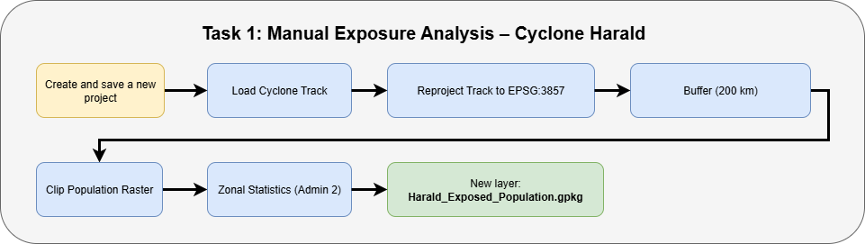

Exercises 1: Automatisation#
🚧This part of training platform is under ⚠️construction⚠️ and may not be shared or published! 🚧
Characteristics of the exercise#
Type of trainings exercise:
This exercise can be used in online and presence training.
It can be done as a follow-along exercise or individually as a self-study.
Estimated time demand for the exercise
Relevant Wiki Articles
Aim of the exercise:
Instructions for the trainers#
Trainers Corner
Prepare the training
Take the time to familiarise yourself with the exercise and the provided material.
Prepare a white-board. It can be either a physical whiteboard, a flip-chart, or a digital whiteboard (e.g. Miro board) where the participants can add their findings and questions.
Before starting the exercise, make sure everybody has installed QGIS and has downloaded and unzipped the data folder.
Check out How to do trainings? for some general tips on training conduction
Conduct the training
Introduction:
Introduce the idea and aim of the exercise.
Provide the download link and make sure everybody has unzipped the folder before beginning the tasks.
Follow-along:
Show and explain each step yourself at least twice and slow enough so everybody can see what you are doing, and follow along in their own QGIS-project.
Make sure that everybody is following along and doing the steps themselves by periodically asking if anybody needs help or if everybody is still following.
Be open and patient to every question or problem that might come up. Your participants are essentially multitasking by paying attention to your instructions and orienting themselves in their own QGIS-project.
Wrap up:
Leave time for any issues or questions concerning the tasks at the end of the exercise.
Leave some time for open questions.
Available Data#
The folder is called “ and contains the whole standard folder structure with all data in the input folder and the additional documentation in the documentation folder.
Dataset |
Source |
Descriptions |
|---|---|---|
Administrative Boundaries |
The administrative boundaries on level 0-4 for Madagascar can be accessed via HDX provided by OCHA. For this trigger mechanism we provide the administrative boundaries on level 1 (regional level) and 2 (district level) as a shapefile. |
|
Cyclone Tracks |
International Best Track Archive for Climate Stewardship (IBTrACS) |
IBTrACS project is the most complete global collection of tropical cyclones available. It merges recent and historical tropical cyclone data from multiple agencies to create a unified, publicly available, best-track dataset that improves inter-agency comparisons. |
education facilities and health sites |
The POI data (education facilities and health sites) is downloaded using the HOT Export Tool based on OpenStreetMap data. |
|
Population |
The worldpop dataset in raster format provides the estimated total number of people per grid-cell for the year 2020. We will be working with the Constrained Individual countries 2020 dataset at a resolution of 100m. |
Context
Aina is the GIS expert at the Croix-Rouge Malagasy (CRM). With the cyclone season approaching, she knows that time is of the essence once a storm is forecasted. Every hour counts when it comes to protecting communities at risk.
This year, Aina wants to be one step ahead. Instead of manually analyzing cyclone data under pressure, she decides to prepare an automated QGIS model that will help her respond quickly and efficiently.
Her goal:
Build a workflow that automatically estimates exposed populations and infrastructure at risk.
{kind=link}

Tasks: Estimating Exposed Population – Aina’s Manual Approach#
Before developing the automated model, Aina used to estimate the exposed population manually whenever a cyclone approached Madagascar. In this task, you will follow the steps she used in the past by working with the historical track of Cyclone Harald, WorldPop raster data, and administrative boundaries.
You will manually buffer the cyclone track, clip the population raster, and calculate exposed population using zonal statistics.
Open QGIS and create a new project by clicking on
Project->NewSave the project in the “project” folder. To do that click on
Project->Save asand navigate to the folder. Name the project “Cyclon_Harald_Exposure”.Load the GeoJOSN file “Harald_2025_Track.geojson” in your project by drag and drop (Wiki Video) .
Reproject the cyclone track to use meters instead of degrees (important for accurate buffering):
In the Processing Toolbox, search for
Reproject Layer.Input:
Harald_2025_TrackTarget CRS:
EPSG:29738or another meter-based CRS appropriate for Madagascar.Save the result in the
tempfolder as:Harald_Track_Reprojected
Attention
Buffer distances must be calculated in meters. Many datasets (like GeoJSON cyclone tracks) use geographic coordinate systems like EPSG:4326, which measure in degrees — not meters. To correctly calculate a 200 km buffer, we must first reproject the track into a projected CRS that uses meters.
Buffer the cyclone track:
In the Processing Toolbox, search for
Buffer.Input:
Harald_Track_ReprojectedBuffer distance:
200000(meters)Segments: Leave default (5)
Dissolve:
YesSave output in the
tempfolder as:Harald_Buffer_200km
Reproject the buffer back to EPSG:4326 (to match the raster’s CRS):
In the Processing Toolbox, search for Reproject Layer.
Input: Harald_Buffer_200km_29738
Target CRS: EPSG:4326 – WGS 84
Save the output in the temp folder as: Harald_Buffer_200km_4326
Load the administrative boundaries:
File:
MDG_adm2.gpkgAdd using drag and drop or
Add Vector Layer.
Load the population raster:
File:
MDG_WorldPop_2020_constrained.tifAdd using
Layer→Add Raster Layer.
Clip the population raster using the buffered impact zone:
In the Processing Toolbox, search for
Clip Raster by Mask Layer.Input raster:
MDG_WorldPop_2020_constrained.tifMask layer:
Harald_Buffer_200kmSave output in the
tempfolder as:Harald_Pop_Clip.tif
Calculate total exposed population:
In the Processing Toolbox, search for
Zonal Statistics.Input vector layer:
MDG_adm2.gpkgRaster layer:
Harald_Pop_Clip.tifStatistic to calculate:
SumField prefix: e.g.,
pop_Save the updated vector layer in the
resultfolder as:Harald_Exposed_Population.gpkgThe result will be a new column in the attribute table of the
MDG_adm2.gpkglayer, showing the total population within the cyclone buffer per district.
Visualise the affected population by classifying the results: Now that Aina has estimated the exposed population in each district, she wants to clearly show the differences across regions on the map. To do this, we’ll apply a graduated classification to the
Harald_Exposed_Population.gpkglayer using the new population field created by the Zonal Statistics tool.
In the Layers panel, right-click on the layer
Harald_Exposed_Populationand chooseProperties.Go to the Symbology tab on the left.
At the top of the window, change the style from
Single SymboltoGraduated.In the Value drop-down menu, select the field that contains the population sum. It typically starts with the prefix you defined earlier, e.g.
pop_sum.Set the color ramp to one that suits your map (e.g.
Reds).Choose a classification mode (e.g.
Quantile,Natural Breaks, orEqual Interval) and select the number of classes (e.g. 5).Click
Classifyto generate the classification.Click
Applyand thenOKto display the classified map.
Tip
You can adjust class boundaries or labels by double-clicking on each class entry.
Your results should look something like this:
🛠️ Task 2: Automatisation of Estimating Exposed Population – Aina’s Model#
After manually estimating exposed populations in past cyclone seasons, Aina has decided to prepare an automated model using the QGIS Graphical Modeller. This will help her move faster and avoid repeating the same steps manually each time a cyclone is forecasted.
In this task, you will help Aina build a simple version of that model using the tools from Task 1. The model should:
Reproject the cyclone track to EPSG:29738
Buffer the cyclone track
Reproject the buffer back to EPSG:4326
Clip the population raster
Run Zonal Statistics to get exposed population per district
Set up the model structure:
Open the Graphical Modeler from the top menu:
Processing→Graphical Modeler…
Naming the model:
A new model window will open. On the left side, click on
Model Propertiesto define basic information about the model:Model Name:
Estimate_Exposed_PopulationGroup:
Cyclone Trigger ToolsLeave the description empty or write: “Automated model to estimate exposed population based on cyclone buffer.”
Save the model
To save the model:
Click the Save icon (💾) or go to
Model→Save.Navigate to the
projectfolder of your training structure.Save the model as:
Estimate_Exposed_Population
Add model inputs:
On the left panel, expand the Inputs section.
Add the following input layers with type constraints:
+ Vector LayerLabel:
Cyclone TrackIn the Advanced panel, set geometry type to
Line
+ Raster LayerLabel:
Population Raster
+ Vector LayerLabel:
Admin BoundariesIn the Advanced panel, set geometry type to
Polygon
These will appear at the top of your model canvas and serve as the input data when the model is run.
Tip
All inputs should be set as mandatory, so the model always receives the necessary data to run correctly.
Reproject the cyclone track to EPSG:29738
From the Algorithms panel, search for Reproject Layer and drag it into the model canvas.
In the configuration window:
Set Input layer to
Cyclone Track(from Model Input).Set Target CRS to
EPSG:29738 – Madagascar / Laborde Grid.Set the output to Model Output (leave the output name empty).
Click OK to add the step to the model.
Buffer the reprojected cyclone track
From the Algorithms panel, search for Buffer and drag it into the model canvas.
In the configuration window:
Set Input layer to the output from the previous step (from Algorithm Output).
Set Distance to
200000(200 km).Leave Segments at the default value (
5).Set Dissolve result to
Yes.Set the output to Model Output (leave the output name empty).
Click OK to add the step to the model.
Reproject the buffer back to EPSG:4326
From the Algorithms panel, search for Reproject Layer and drag it into the model canvas.
In the configuration window:
Set Input layer to the output from the previous step (from Algorithm Output).
Set Target CRS to
EPSG:4326 – WGS 84.Set the output to Model Output (leave the output name empty).
Click OK to add the step to the model.
Clip the population raster using the buffered area
From the Algorithms panel, search for Clip Raster by Mask Layer and drag it into the model canvas.
In the configuration window:
Set Input layer to
Population Raster(from Model Input).Set Mask layer to the output from the previous step (from Algorithm Output).
Set the output to Model Output (leave the output name empty).
Click OK to add the step to the model.
Calculate zonal statistics to estimate exposed population
From the Algorithms panel, search for Zonal Statistics and drag it into the model canvas.
In the configuration window:
Set Input layer to
Admin Boundaries(from Model Input).Set Raster layer to the output of the previous step (from Algorithm Output).
Set Output column prefix to
pop_.Under Statistics to calculate, select
Sum.Set the output to Model Output and name it:
exposed_population_sum
Click OK to add the step to the model.
Validate your model (recommended)
Before saving or running, click the ✔️ Validate Model button in the top toolbar.
Fix any warnings or errors shown in the log panel.
This helps ensure your model is complete and won’t break during execution.
Save your completed model
Once your model is finished and the final output is set, save your work.
Click the Save icon (💾) or go to
Model→Save.Navigate to the
projectfolder of your training structure.Save the model as:
Estimate_Exposed_Population.model3
You can now run this model any time a new cyclone track becomes available.
🛠️ Task 3: Identifying Affected Health Facilities and Schools – Aina Adds More Layers#
After building her model to estimate exposed population, Aina wants to expand its usefulness. She decides to also identify critical services affected by cyclones — especially health facilities and schools.
Not only does she want to know which facilities are affected, but also how many in total exist per district. That way, she can calculate the percentage of services affected in each area — a valuable insight for prioritizing early actions.
To achieve this, she will use two point datasets from OpenStreetMap:
Save your model under a new name
Open your existing model
Estimate_Exposed_Population.model3.Immediately save it under a new name:
Click
Model→Save As…Save it to the
projectfolder as:
Estimate_Exposed_Population_Health_Education.model3
Add new model inputs
In the Inputs section, add:
Vector LayerLabel:
Health FacilitiesSet Geometry Type to
Point
Vector LayerLabel:
Education FacilitiesSet Geometry Type to
Point
Count All Health Facilities per Admin 2
From the Algorithms panel, search for Count Points in Polygon and drag it in.
Configuration:
Polygon layer:
Admin Boundaries(Model Input)Points layer: full
Health FacilitiesinputCount field name:
count_health_totalLeave output as Model Output
Count All Education Facilities per Admin 2
Add another Count Points in Polygon step.
Configuration:
Points layer: full
Education FacilitiesinputCount field name:
count_education_totalLeave output as Model Output
Intersect Health Facilities with Cyclone Buffer
From the Algorithms panel, search for Intersection and drag it into the model.
In the configuration window:
Input layer:
Health Facilities(Model Input)Overlay layer: buffered cyclone zone (use “Reprojected to EPSG:4326” from Algorithm Output)
Leave output as Model Output
Click OK
Intersect Education Facilities with Cyclone Buffer
Add another Intersection algorithm.
Configuration:
Input layer:
Education Facilities(Model Input)Overlay layer: buffered cyclone zone (use “Reprojected to EPSG:4326” from Algorithm Output)
Leave output as Model Output
Click OK
Count Affected Health Facilities per Admin 2
Add Count Points in Polygon
Configuration:
Polygon layer:
Admin BoundariesPoints layer: intersected health facilities output
Count field name:
count_health_affectedOutput name:
sum_exposed_healthsites_POI
Count Affected Education Facilities per Admin 2
Add Count Points in Polygon
Configuration:
Points layer: intersected education facilities output
Count field name:
count_education_affectedOutput name:
sum_exposed_education_POI
Validate and Save Your Extended Model
Click the ✔️ Validate Model button to check for errors.
Save again to:
Estimate_Exposed_Population_Health_Education.model3
Run the model
Click the ▶️ Run button in the top-right corner of the Graphical Modeler window.
In the popup dialog:
Browse to select the required input layers:
Cyclone Track→ select the GeoJSON of the storm path (e.g.Harald_2025_Track.geojson)Population Raster→ select the WorldPop raster fileAdmin Boundaries→ select the Admin 2 layer (e.g.MDG_adm2.gpkg)Health Facilities→ select the point dataset for health sitesEducation Facilities→ select the point dataset for schools
Choose a location to save the output for the final layers (you can leave intermediate layers in temporary memory).
Click Run to execute the full model.
When finished, you should see all final output layers loaded into your QGIS workspace.